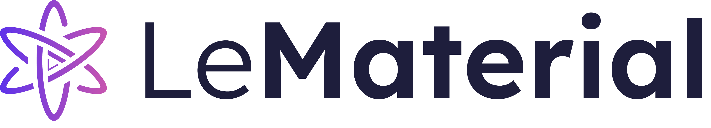
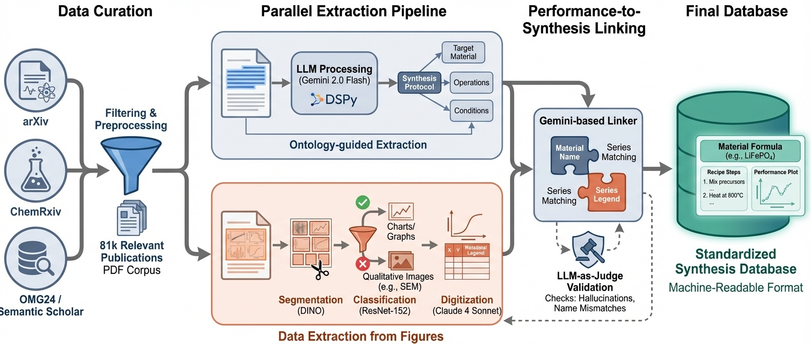

LeMaterial-Synthesis#
{kind=link}

{kind=link}

An open-source multi-modal toolbox for extracting structured synthesis procedures and performance data from materials science literature at scale.
Documentation#
Concepts & architecture
Understand what LeMat-Synth is, how the multi-modal extraction pipeline works, and the design decisions behind the toolbox.
Configuration & data models
Full reference for Hydra configs, supported LLMs, synthesis ontology schema, and bibliographic resources.
Step-by-step learning
Install the toolbox, run your first extraction, and explore interactive Jupyter notebooks with real data.
Practical recipes
Extract from HuggingFace or locally, run case studies, customize the pipeline, and contribute to the project.
Key Features#
Multi-Modal Extraction: Extract structured data from both text and figures in scientific papers
Multi-LLM Support: Works with Mistral, OpenAI, Google Gemini, and Anthropic Claude
Judge Evaluation: Built-in LLM judges for quality assessment of extracted data
Hydra Configuration: Flexible, composable configuration system
Case Studies: Ready-to-use pipelines for superconductors and thermocatalysis
Overview#
